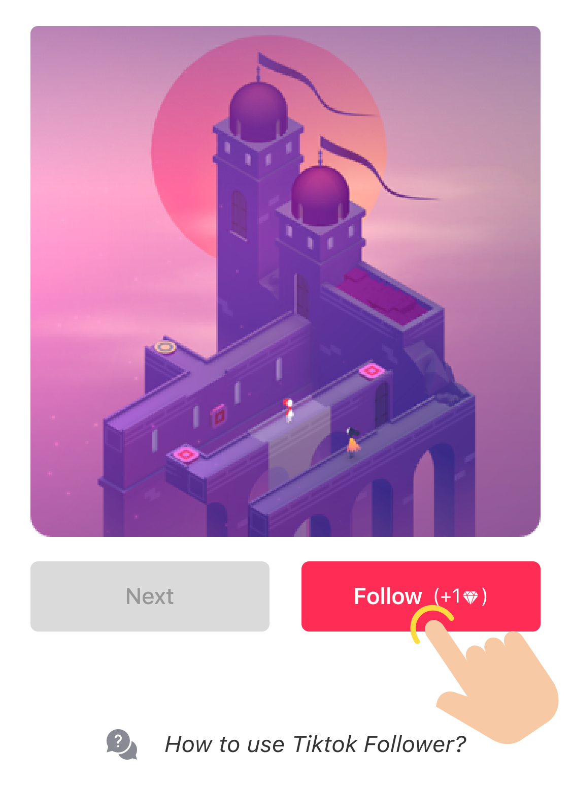
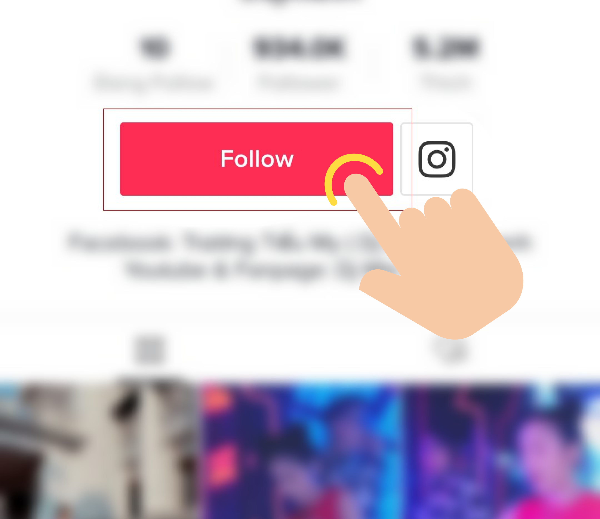

Follow these simple steps to earn diamonds by following people
- Step 1: Open the TikTok app and log in with same account you use in the TikStar and double tap a photo or press the Follow button.
- Step 2: Open TikStar and press the Follow button.

- Step 3: The TikTok app will open on the user's profile. Press Follow to follow the user.

- Step 4: Return to the TikStar app to collect your diamond. You can do this in two ways:
-
If you see a back button in the top left corner, press it.
-
If you still don't see a back button, double-press the home button, and select TikStar to return to the app.